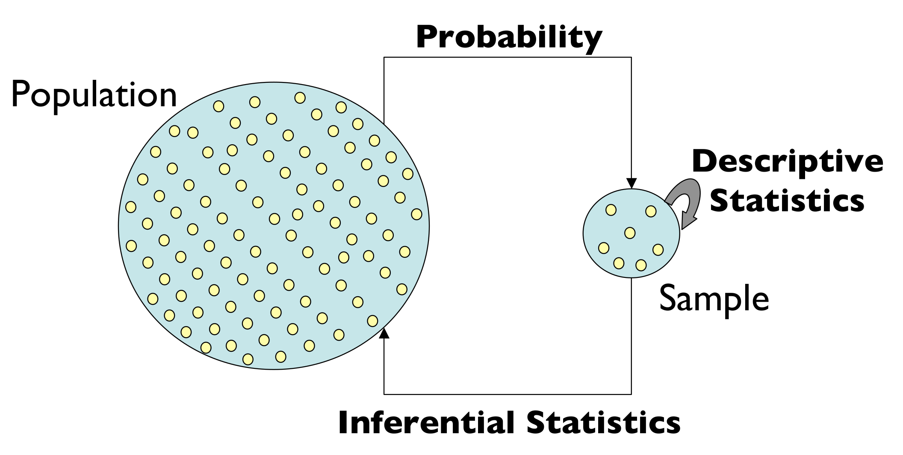
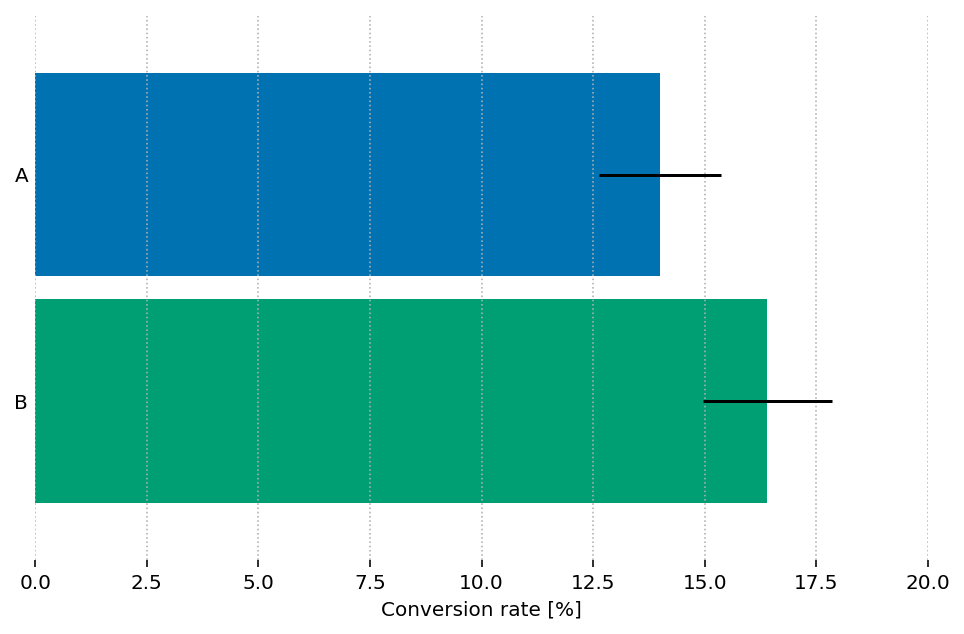
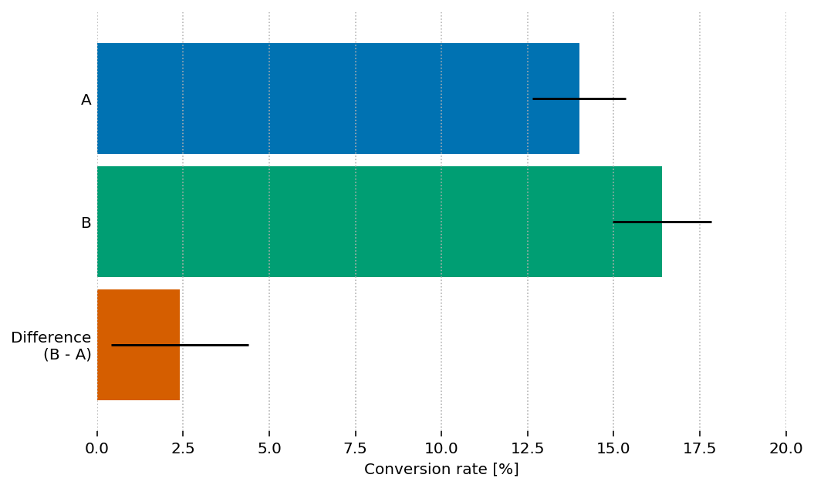
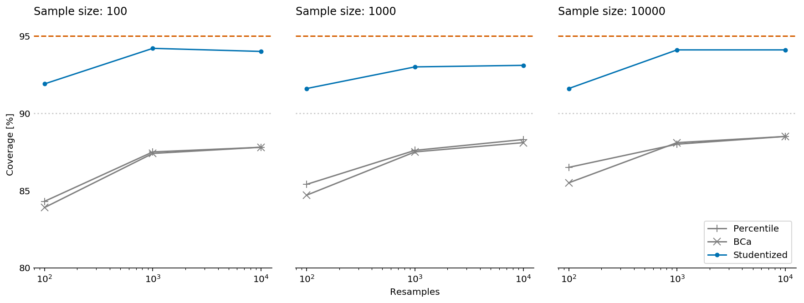
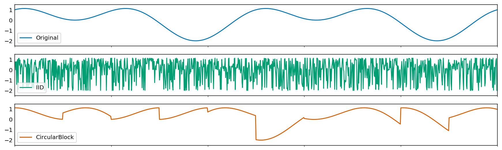
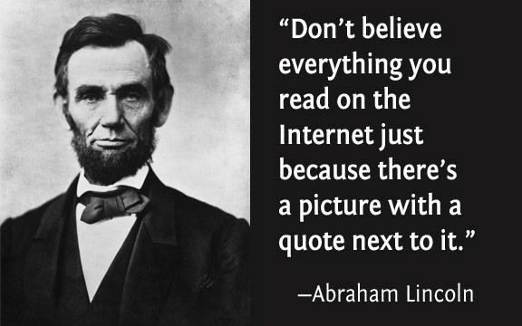

Bootstrapping the right way
Yanir Seroussi
yanirseroussi.com | @yanirseroussi | linkedin.com/in/yanirseroussi
Running example: A/B testing
We want to...
...compare conversion rates and revenue
...estimate uncertainty of metrics
We don't want...
...binary answers
...too many modelling assumptions
We want to compare...
conversion rates
Example: Testing titles for this talk
| Variant | A | B |
|---|---|---|
| Title | Rambling about bootstrapping, confidence intervals, and the reliability of online sources | Bootstrapping the right way |
| Visitors | 2500 | 2500 |
| Ticket sales | 350 | 410 |
| Conversion rate | 14% | 16.4% |
Why are we doing this?
Back to our problem: Ask the internet?
Let's look at a type of dataset that I often work on: conversions [...] the formula for the confidence interval [...]
scipy.stats.beta.ppf([0.025, 0.975], k, n - k)
Applying the formula to our case...
...but the difference CI can't be obtained from single-sample CIs!
Detour:
On bootstrapping confidence intervals
What do CIs even mean?
In statistics, a confidence interval (CI) is a type of interval estimate, computed from the statistics of the observed data, that might contain the true value of an unknown population parameter. The interval has an associated confidence level that, loosely speaking, quantifies the level of confidence that the parameter lies in the interval. More strictly speaking, the confidence level represents the frequency (i.e. the proportion) of possible confidence intervals that contain the true value of the unknown population parameter. In other words, if confidence intervals are constructed using a given confidence level from an infinite number of independent sample statistics, the proportion of those intervals that contain the true value of the parameter will be equal to the confidence level.
Let's try again...
Interval: Not a single point, a range
Confidence level: Higher is wider, lower is narrower
Confidence interval: Yet another confusing frequentist concept
Key insight: We can test the correctness of CI algorithms!
The basic bootstrap idea
- Simulate the population by sampling with replacement from your sample(s)
- Calculate interesting stats based on the resamples
Bootstrapping by example: CI for mean
| Sample | Data | Mean |
| Original | 10, 12, 20, 30, 45 | 23.4 |
| Resample 1 | 30, 20, 12, 12, 45 | 23.8 |
| Resample 2 | 20, 20, 30, 30, 30 | 26 |
| ... | many more resamples | ... |
means = [np.random.choice(sample, size=len(sample)).mean()
for _ in range(num_resamples)]
np.percentile(means, [2.5, 97.5])
What's wrong with the example?
What's wrong? "many more resamples"
[...] the number of resamples needs to be 15,000 or more, for 95% probability that simulation-based one-sided levels fall within 10% of the true values, for 95% intervals [...]
We want decisions to depend on the data, not random variation in the Monte Carlo implementation. We used r = 500,000 in the Verizon project.
What's wrong? Percentile method
The sample sizes needed for different intervals to satisfy the "reasonably accurate" (off by no more than 10% on each side) criterion are: n ≥ 101 for the bootstrap t, 220 for the skewness-adjusted t statistic, 2,235 for expanded percentile, 2,383 for percentile, 4,815 for ordinary t (which I have rounded up to 5,000 above), 5,063 for t with bootstrap standard errors and something over 8,000 for the reverse percentile method.
Why not simulate to test the CIs?
Bootstrapping is promoted because "it's just for loops" *
We should also use for loops to validate bootstrapping code!
* It's actually not that simple:
In practice, implementing some of the more accurate bootstrap methods is difficult, and people should use a package rather than attempt this themselves.
Resampling in the Undergraduate Statistics Curriculum (shorter version)
Back on course...
Comparing revenue
Example: Testing different price tiers
| Variant | A | B |
|---|---|---|
| Free | 40% @ $0 | 60% @ $0 |
| Tier 1 | 30% @ $25 | 25% @ $50 |
| Tier 2 | 20% @ $50 | 10% @ $100 |
| Tier 3 | 10% @ $100 | 5% @ $200 |
| True mean | $27.5 | $32.5 |
However, observed revenue varies
Factors: different taxes, exchange rates, discount vouchers, etc.
(and our friend, randomness)

Let's simulate!
rnd = np.random.RandomState(0)
weights = [0.4, 0.3, 0.2, 0.1]
prices = [0, 25, 50, 100]
sample = []
for price, size in zip(prices, rnd.multinomial(100, weights)):
if price:
sample.extend(rnd.poisson(price, size))
else:
sample.extend([0] * size)
Testing different CI methods with ARCH
How often is the true difference in means in the "95%" CI?
What about revenue over time?
Out of scope, but remember the IID (independent and identically distributed) assumption
Summary
- Don't compare single-sample CIs
- Use enough resamples (15K?)
- Use a solid bootstrapping package (Python ARCH)
- Use the right bootstrap for the job
- Consider going parametric Bayesian
- Test all the things
Main takeaway
Further reading: Hackers beware: Bootstrap sampling may be harmful on yanirseroussi.com